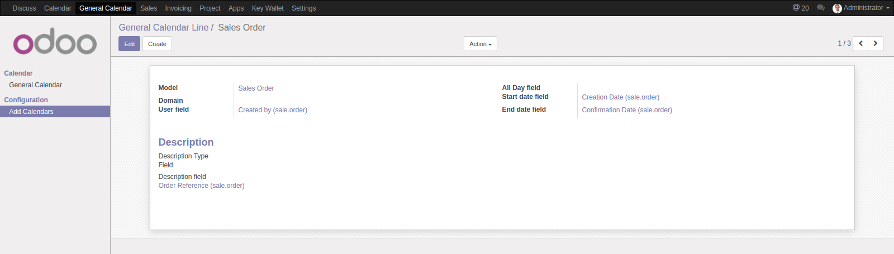

Configuration
See this follows steps to configure General Calendar module.
After installing the module you can go to General calendar > Configuration > Add Calendars and create a new calendar.
The Calendar Events from Calendar module come by default. For instance, if you want to see project tasks and sale orders, you can create the following lines
Project Task

Sale Orders
You can visualize it in the general calendar main menu.
IMPORTANT: After update calendar list, remember of update General Calendar module in models list.
As you can see, several filters are available. A typical usage consists in filtering by Module and by your user. Once you filtered, you can save the filter as Advanced filter or even add it to a dashboard.